System Architectures with XNET
The XNET fire networks can include the following units:
- MXL fire control panels
- FireFinder XLS fire control panels
- FireFinder NCC (Network Command Center) stations
- Cerberus Pro Modular fire control panels
- Desigo Fire Safety Modular fire control panels
- Desigo CC management stations

Hybrid fire system architectures combining SAFEDLINK and XNET networks are also possible. For more information, see the FS20 Desigo Fire or FS92 Cerberus Pro sections.
In the following figures, the Listed PC and network devices should comply with requirements described in:
- Management Station Hardware in UL Fire Systems
- Management Station Hardware in ULC Fire Systems
- Hardware Requirements for UL Norms Compliance
- Hardware Requirements for ULC Norms Compliance
Conduits: Local connections must comply with UL 864 10th edition, and specifically to sections 50.3 exception 1 and 56.1.2 f.
Copper-based wiring must be enclosed in listed conduits within 20 ft (UL) or 18 m (ULC).
For UL/ULC compliance information, see the XNET Fire Panel Settings section in the Compliance Notice for UL Norms page or Compliance Notice for ULC Norms page.
XNET Connections and Structure
The figure below illustrates the supported XNET connections with the internal element structure.
The example includes:
- NIC-based XNET in a bus structure
- NRC-based Network Ring in a loop structure
- XINC-NIC-based Network ring in a loop structure
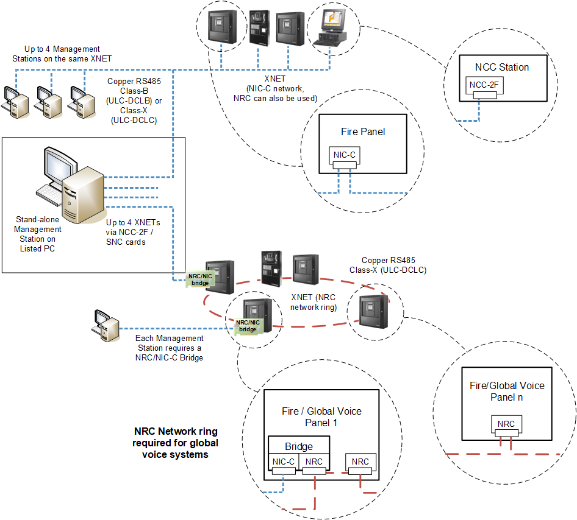
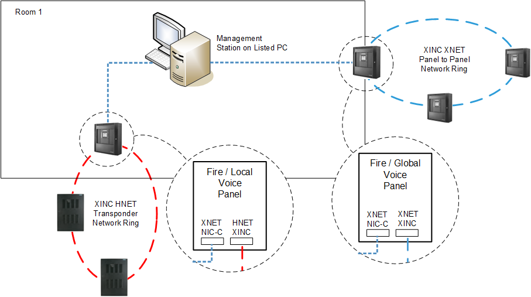
| Units installed in the same room within 20 ft (UL) or 18 m (ULC) from each other |
| XNET: Class B or Class X RS-485 |
XINC XNET Ring: Class X RS-485 | |
XINC HNET Ring: Class X RS-485 | |
NRC XNET Ring: Class X RS-485 |


NOTE: Class A = DCLA; Class B = DCLB; Class X = DCLC
Stand-alone Management Station Architecture
In single-station local systems, the XNET fire network is connected to a stand-alone management station, equipped with a special hardware (NCC 2F and SNC boards) that can communicate with the control panels in the XNET.
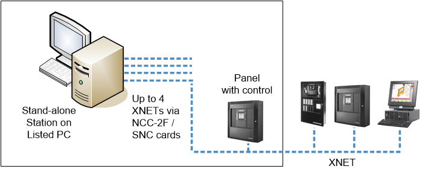
| Units installed in the same room within 20 ft (UL) or 18 m (ULC) from each other |
| Ethernet wiring within 20 ft (UL) or 18 m (ULC) in UL/ULC listed conduits |
| XNET: Class B or Class X RS-485 |

NOTE: Class A = DCLA; Class B = DCLB; Class X = DCLC
Local Client/Server Management Station Architecture
In local client/server solutions, the same type of connection is implemented on the server station that provides communication services to client stations within the same control room.
The management stations and the Ethernet switch must be within 20 ft (UL) or 18 m (ULC) of each other, and copper network cables must be mechanically protected by UL 864 / ULC S527-compliant conduits. A UL/ULC-listed switch must be used.
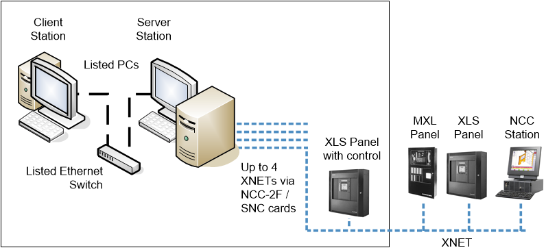
| Units installed in the same room within 20 ft (UL) or 18 m (ULC) from each other |
| Ethernet wiring within 20 ft (UL) or 18 m (ULC) in UL/ULC listed conduits |
| XNET: Class B or Class X RS-485 |
NOTE: Class A = DCLA; Class B = DCLB; Class X = DCLC
Campus-Wide Client/Server Management Station Architecture
Larger client/server solutions may include connections to fire networks in remote buildings over fiber optic links, applying a single (DCLB) or dual (DCLC) fiber connection, and local VNT interfaces in each remote building. Appropriate UL 864 / ULC S527 compliant switches with fiber optic ports must be used. A stand-alone management station may manage a single remote fire network.
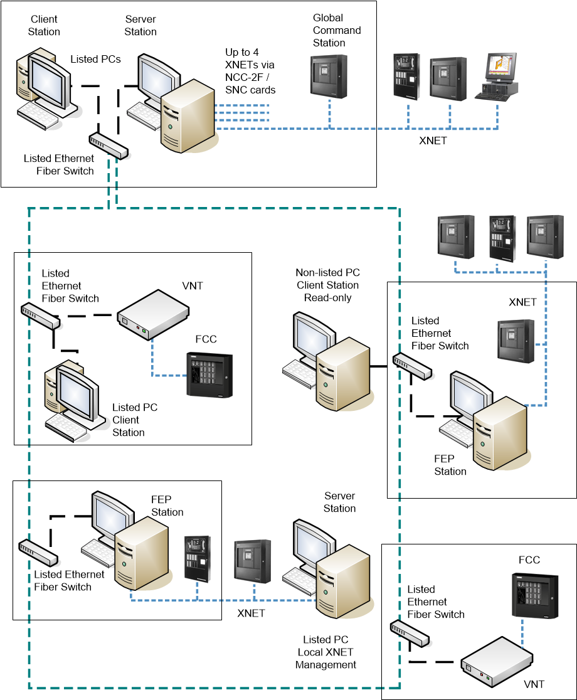
| Units installed in the same room within 20 ft (UL) or 18 m (ULC) from each other |
| Ethernet wiring within 20 ft (UL) or 18 m (ULC) in UL/ULC listed conduits |
| Ethernet over Fiber optic cable (Single mode or Multi mode), connected in Class B or Class X |
| XNET: Class B or Class X RS-485 |

NOTE: Class A = DCLA; Class B = DCLB; Class X = DCLC
Wide Client/Server Management Station Architecture
Larger client/server solutions may include additional remote client stations that need to be connected over fiber optic links, applying a single (DCLB) or dual (DCLC) fiber connection.
Appropriate UL/ULC-listed switches with fiber optic ports must be used. As in the central location, note the ULC S527 rules to follow at the remote station.
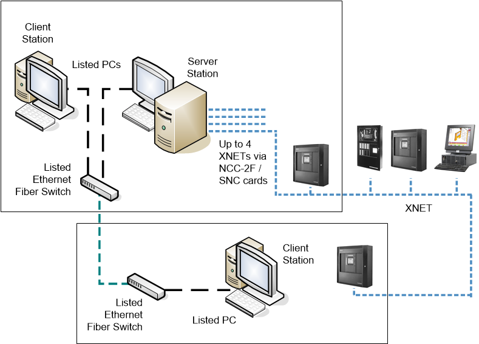
| Units installed in the same room within 20 ft (UL) or 18 m (ULC) from each other |
| Ethernet wiring within 20 ft (UL) or 18 m (ULC) in UL/ULC listed conduits |
| Ethernet over Fiber optic cable (Single mode or Multi mode), connected in Class B or Class X |
| XNET: Class B or Class X RS-485 |
NOTE: Class A = DCLA; Class B = DCLB; Class X = DCLC
Wide Client/Server Architecture with Multiple XNETs via FEP Stations
Client/server solutions can also support multiple fire networks, both local and remote. FEP stations can be deployed over the computer network as necessary for the additional connections.
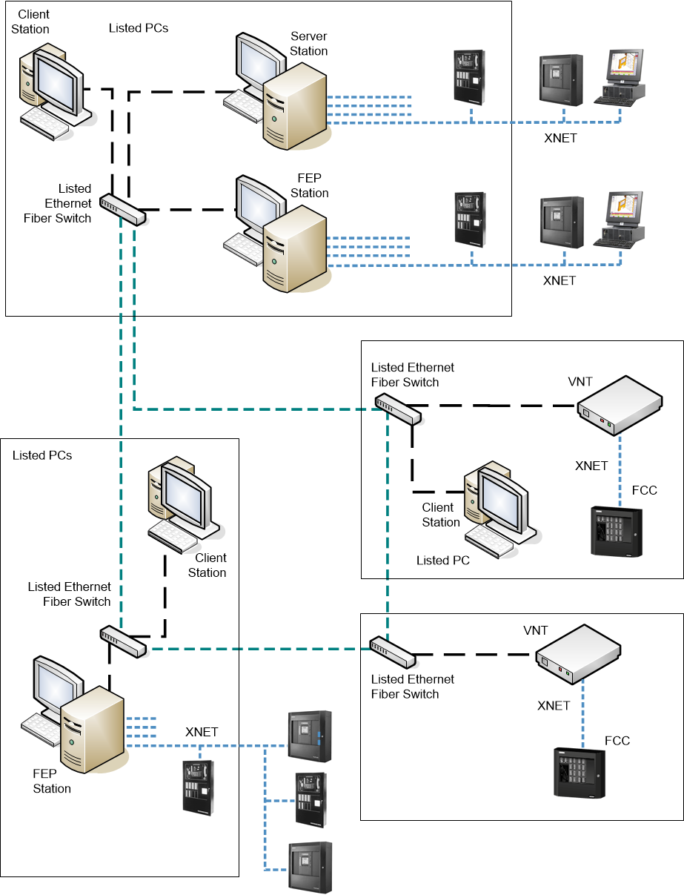
| Units installed in the same room within 20 ft (UL) or 18 m (ULC) from each other |
| Ethernet wiring within 20 ft (UL) or 18 m (ULC) in UL/ULC listed conduits |
| Ethernet over Fiber optic cable (Single mode or Multi mode), connected in Class B or Class X |
| XNET: Class B or Class X RS-485 |
NOTE: Class A = DCLA; Class B = DCLB; Class X = DCLC
Redundant Management Station Servers and FEPs Architecture
A large client/server solution can support redundant sets of stations, including dual servers and dual FEPs. While the main system has full control, the backup system runs with no control of the fire system. If the main system fails, a manual operation on all stations (user account switchover) can transfer the control to the redundant system.
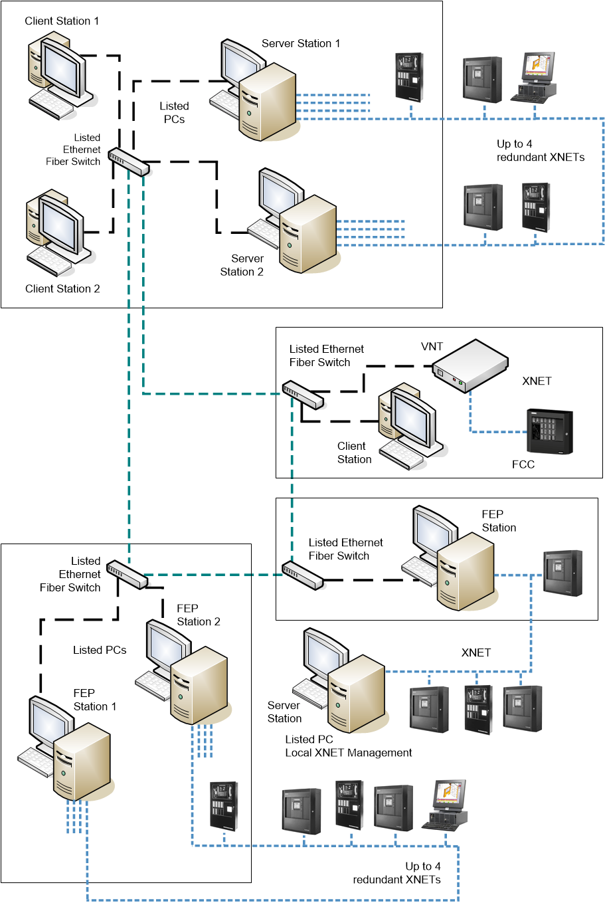
| Units installed in the same room within 20 ft (UL) or 18 m (ULC) from each other |
| Ethernet wiring within 20 ft (UL) or 18 m (ULC) in UL/ULC listed conduits |
| Ethernet over Fiber optic cable (Single mode or Multi mode), connected in Class B or Class X |
| XNET: Class B or Class X RS-485 |
NOTE: Class A = DCLA; Class B = DCLB; Class X = DCLC
Distributed Systems Architecture
Very large-size solutions may include multiple local systems in a distributed architecture. Each local system is based on a project, and multiple projects can be deployed to one or more interconnected server computers. Local system projects can include FEPs and local redundant solutions. The client stations can access data from all projects.
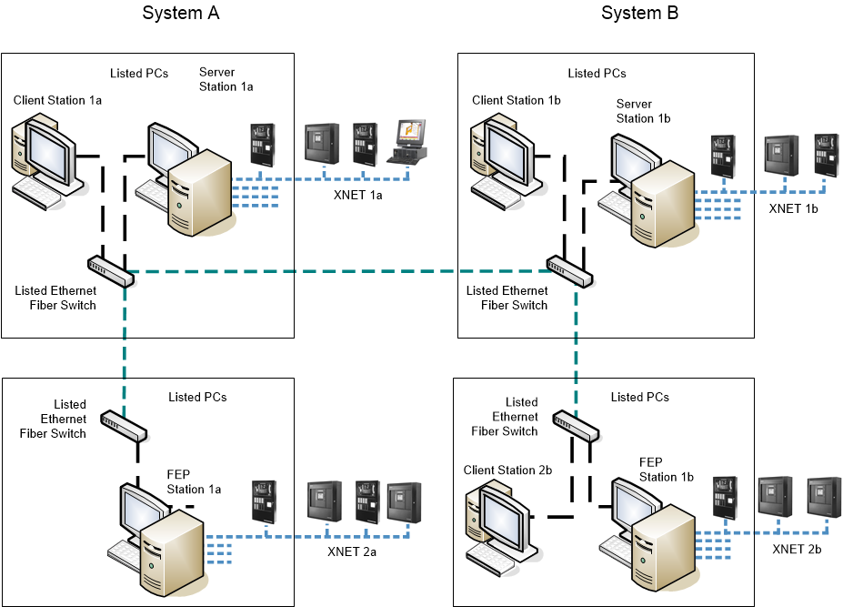
| Units installed in the same room within 20 ft (UL) or 18 m (ULC) from each other |
| Ethernet wiring within 20 ft (UL) or 18 m (ULC) in UL/ULC listed conduits |
| Ethernet over Fiber optic cable (Single mode or Multi mode), connected in Class B or Class X |
| XNET: Class B or Class X RS-485 |
NOTE: Class A = DCLA; Class B = DCLB; Class X = DCLC
Monitoring-Only Fire Architecture Through MOSA
In monitoring-only solutions, Desigo CC can connect to XNET fire networks through the MOSA LAN adapter, installed into one of the networked panels.
The management stations can only access the fire network in read-only mode.
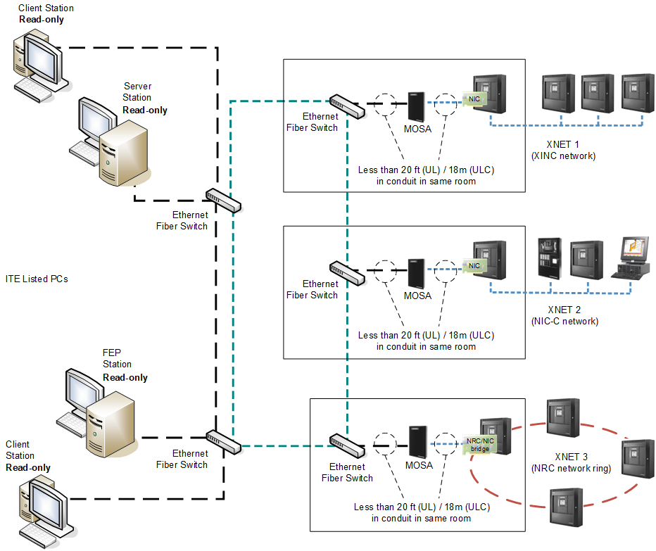
NOTE: the MXL panels shown represent generic Voice panels; the mixed topology of XLS/FS20M and MXL panels is not supported in NRC-based networks
It is also possible to connect two GMS servers to the same MOSA LAN adapter using the Redundant Server configuration. For more details, see the MOSA XNET Monitoring Only Solution Assembly, Installation Instructions document (A6V10415932).
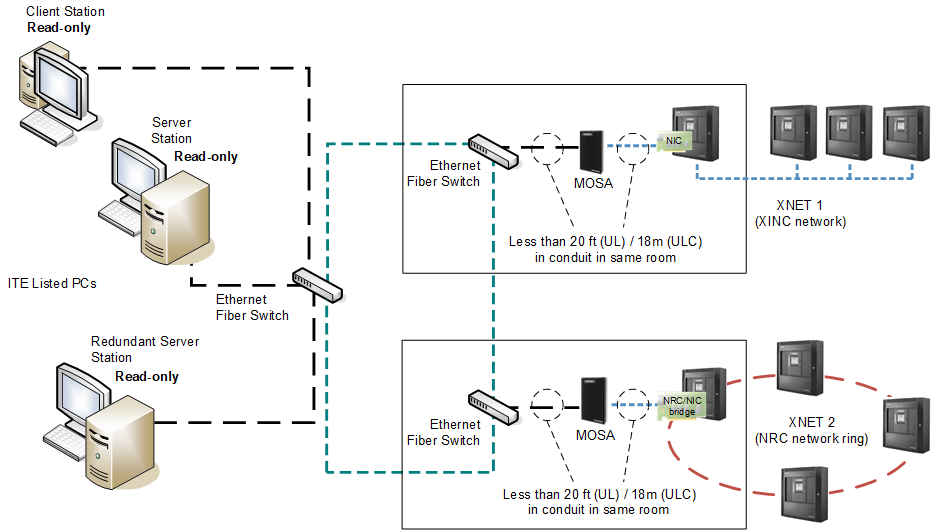
NOTE: the two Managed Stations must have the same XNET address and be connected to a single port of the MOSA adapter. Therefore, there can be no monitoring between them.
| Units installed in the same room within 20 ft from each other |
| Ethernet wiring |
| Ethernet over Fiber optic cable (Single mode or Multi mode), connected in Class B or Class X |
| XNET: Class B or Class X RS-485 |
NRC Ring: Class X RS-485 |
NOTE: Class A = DCLA; Class B = DCLB; Class X = DCLC